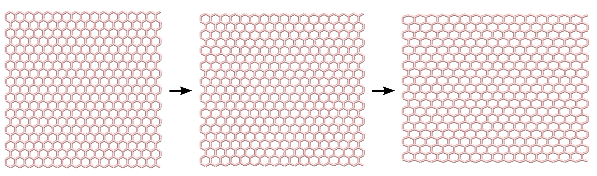
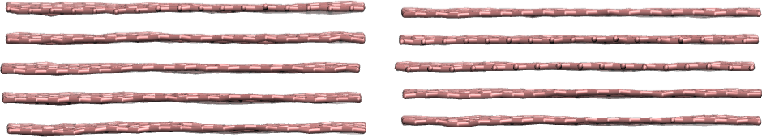

Graphene sheet and CNT
Generation of a graphene sheet and a carbon nanotube CNT with VMD, and imposed deformation using LAMMPS

The objective of this tutorial is to use molecular dynamics and simulate the deformation of simple carbon-based structures. There are two main parts to this tutorial:
- Graphene sheet - First, a graphene sheet will be generated using VMD-topotool. The sheet will be deformed using applied displacement.
- CNT - Second, a similar protocol will be used to create a single CNT. In this case, a reactive force field will be used in order to simulate the breaking of the bonds under extreme deformation.
If you are new to LAMMPS, I recommend you to follow this simpler tutorial first.
Click here if you are looking for help with your project, if you want to support me (for free or not), or if you have any suggestions for these tutorials.
Graphene sheet
Generation of the system
The initial configuration (atoms positions, bonds, angles, etc.) is
generated using VMD. Open VMD,
and go to Extensions, Modeling, Nanotube Builder. A window named
Carbon Nanostructures opens up, allowing us to choose between
generating sheet and nanotube of graphene or BN. For this
tutorial, we are going to generate a 4 nm per 4 nm sheet of graphene.
Simply change the values of "Edge length along x" and "Edge length
along y" to 4, and click on "Generate Sheet(s)". You shoud see
this:

At this point, this is not a molecular dynamics simulations, but
a cloud of dots that looks like graphene. In order to generate
the initial LAMMPS data file, let us use Topotool and estimate which
dots must be connected by bonds using a distance criteria.
In the VMD terminal, enter the following command:
topo writelammpsdata data.lammps fullMore details about these commands can be found on the personal page of Axel Kohlmeyer. In short, Topotool deduces the location of bonds, angles, dihedrals, and impropers from the positions of the atoms, and generates a file that can be read by LAMMPS. The keyword "full" corresponds to the LAMMPS atom full style (other possibilities include atomic, bond, charge, etc). The parameters of the constraints (bond length, dihedral coefficients, etc.) will be given later. A new file named "data.lammps" has been created.
We need the box to be larger than the structure (i.e. we need vacuum on each side of the graphene). Make sure of that by increasing the box dimensions in the data.lammps file:
-20 60 xlo xhi
-20 60 ylo yhi
-40 40 zlo zhi
It starts like that:
LAMMPS data file. CGCMM style. atom_style full generated by VMD/TopoTools v1.7 on Tue Jan 12 19:39:40 GMT 2021
680 atoms
983 bonds
1894 angles
3665 dihedrals
608 impropers
1 atom types
1 bond types
1 angle types
1 dihedral types
1 improper types
-20.965628 59.034372 xlo xhi
-19.438999 60.561001 ylo yhi
-40.000000 40.000000 zlo zhi
# Pair Coeffs
#
# 1 CAAs you can see, the data.lammps file contains information about the positions of the carbons atoms, as well as the identity of the atoms linked by bonds, angles, dihedrals, and impropers constraints.
Save the "data.lammps" file in the same folder as your future LAMMPS input script. We are done with the system generation, we can start the molecular dynamics simulations.
LAMMPS input script
Create a new text file and name it "input.lammps". Copy the following lines in it:
# Initialisation
variable T equal 300
units real
atom_style full
boundary p p p
pair_style lj/cut 14
bond_style harmonic
angle_style harmonic
dihedral_style opls
improper_style harmonic
special_bonds lj 0.0 0.0 0.5
# System definition
read_data data.lammpsMost of these command lines have been seen already in previous tutorials (see this tutorial or this one), with a few differences: first, the pair style here is lj/cut with parameter 14, which means that the atoms closer than 14 Angstroms from each others interact through a Lennard-Jones potential. Notice that there is no Coulombic interaction because all the atoms in pure graphene have a charge of 0. The bond, angle, dihedral, and improper styles specify the different potentials used to restrain the positions of the atoms For more details, have a look at the LAMMPS website (see for example the OPLS dihedral style). The three numbers of the special bonds command are weighting factors for the Lennard-Jones interaction between atoms connected by bond (respectively directly bounded, separated by two bonds, etc.). For instance, the first weighting factor, with a value of 0, imposes that two atoms connected by a bond do not interact through a LJ potential (therefore they only interact through bonded potentials). Then the read data command opens the data.lammps file previously generated with VMD, which contains the information about the box size, atoms positions, etc.
Parameters for the graphene
What we need now is to specify the parameter of both bonded and non-bonded interactions. Create a new text file and name it "PARM.lammps". Copy the following lines in it:
pair_coeff 1 1 0.066047 3.4
bond_coeff 1 469 1.4
angle_coeff 1 63 120
dihedral_coeff 1 0 7.25 0 0
improper_coeff 1 5 180The pair_coeff indicates the Lennard-jones parameters (\(\epsilon\) and \(\sigma\)) for the only type of atom of the simulation: carbon atom of type 1. The bond_coeff provides the equilibrium distance \(r_0\) as well as the spring constant \(K\) for the harmonic potential imposed between two neighboring carbon atoms, where the potential is : \[ E = K ( r - r_0)^2. \] The angle_coeff gives the equilibrium angle \(\theta_0\) and constant for the potential between three neighbors atoms : \[ E = K ( \theta - \theta_0)^2. \] The dihedral_coeff and improper_coeff give the potential for the constraints between 4 atoms. The file PARM.file can be included in the simulation by adding the following line to input.lammps:
include PARM.lammpsSeparate the atoms into 3 groups
The goal of the present simulation is to impose a deformation to the sheet. To do so, add the following lines to the input script :
# Simulation settings
group gcar type 1
variable xmax equal bound(gcar,xmax)-0.5
variable xmin equal bound(gcar,xmin)+0.5
region rtop block ${xmax} INF INF INF INF INF
region rbot block INF ${xmin} INF INF INF INF
region rmid block ${xmin} ${xmax} INF INF INF INFThe first command includes all of the atoms of type one (i.e. all of our atoms here) in a group named gcar. Then, two variables are defined: \(x_\mathrm{max}\) corresponds to the coordinate of the last atoms along \(x\) minus 0.5 Angstroms, and \(x_\mathrm{min}\) to the coordinate of the first atoms along \(x\) plus 0.5 Angstroms. Then, 3 regions are defined, and correspond respectively to: \[x < x_\mathrm{min},\] \[x_\mathrm{min} > x > x_\mathrm{max}, ~ \text{and} \] \[x > x_\mathrm{max}.\] Then groups of atoms corresponding to the atoms located in each regions respectively can be defined:
group gtop region rtop
group gbot region rbot
group gmid region rmidWhen running the simulation, the number of atoms in each group is printed in the terminal, it's a way of controlling that no mistake was made:
680 atoms in group gcar
20 atoms in group gtop
20 atoms in group gbot
640 atoms in group gmidThermalisation and dynamics
Let us specify the thermalisation and the dynamics of the system. Add the following lines to input.lammps:
velocity gmid create ${T} 48455 mom yes rot yes
fix mynve all nve
compute Tmid gmid temp
fix myber gmid temp/berendsen ${T} ${T} 100
fix_modify myber temp TmidThe "velocity create" command gives initial velocities to the atoms of the group gmid, assuring an initial temperature of \(300\,\)K for these atoms. NVE integration is applied to all atoms, and a Berendsen thermostat is applied to the atoms of the group gmid only. The "fix modify" ensures that the fix Berendsten uses the temperature of the group gmid as an input, instead of the temperature of whole system. The atoms of the edges are not thermalised because their motion will be restrained.
Restrain the motion of the edges
To restrain the motion of the atoms at the edges, add the following commands:
fix mysf1 gtop setforce 0 NULL 0
fix mysf2 gbot setforce 0 NULL 0
velocity gtop set 0 NULL 0
velocity gbot set 0 NULL 0
The two setforce commands cancel the forces applied on the atoms of the two edges, respectively, during the whole simulation along \(x\) and \(z\), and the velocity commands set the initial velocities along \(x\) and \(z\) to 0 for the atoms of the edges. Therefore, the atoms of the edges will remain immobile during the simulation (or they would if no other command was applied to them).
Data extraction
Next, in order to measure the strain and stress in the graphene sheet, let us extract the distance \(L\) between the two edges as well as the force applied on the edges. Let us also create a lammpstrj file containing the trajectories.
variable L equal xcm(gtop,x)-xcm(gbot,x)
fix at1 all ave/time 10 100 1000 v_L file length.dat
fix at2 all ave/time 10 100 1000 f_mysf1[1] f_mysf2[1] file force.dat
dump mydmp all atom 1000 dump.lammpstrjNotice that the values of the force on each edge are extracted from the fixes setforce 'mysf1' and 'mysf2', by calling them using 'f_', the same way variables are called using 'v_' and computes are called using 'c_'. A fix setforce cancels all the forces on a group of atoms every timestep, but allows one to extract the values of the force before its cancellation.
Run
Let us run a small equilibration step:
thermo 100
thermo_modify temp Tmid
# Run
timestep 1.0
run 5000With the thermo_modify command, we specify to LAMMPS that we want the temperature \(T_\mathrm{mid}\) to be printed in the terminal, not the temperature of the entire system. Then, we perform a loop. At each step of the loop, the edges are slightly displaced, and the simulation runs for a short time.
variable var loop 10
label loop
displace_atoms gtop move 0.1 0 0
displace_atoms gbot move -0.1 0 0
run 1000
next var
jump input.lammps loopWhat you observe should resemble this video.
Always remember that what you measure and observe is only as good as your force field.
Whis this force field, no matter how large is the imposed deformation, the bond will never break. To study such bond breaking, one has to use a reactive force field, which is done in the next part.
Carbon nanotube
Using the same protocol as previously, generate a carbon nanotube (just untick "bonds" since we dont need them here). Create a LAMMPS input file, and as previously, type in it:
# Initialisation
variable T equal 300
units metal
atom_style full
boundary p p p
pair_style airebo 2.5 1 1
# System definition
read_data data.lammpsThe first difference with the previous case (the graphene sheet) is the units:
'metal' instead of 'real', a choice that is imposed by the force field we are
going to use (careful, the time is in pico second (\(1\mathrm{e}-12\,\)s) with 'metal'
instead of femto second (\(1\mathrm{e}-15\,\)s) with 'real'). The second difference is the pair_style. We use
airebo, which is a reactive force field. With reactive force field, bonds between atoms are
deduced in real time according to the distance between atoms.
Then, let us include the LAMMPS data file, and set the pair_coeff:
read_data data.lammps
pair_coeff * * CH.airebo CThe CH.airebo file can be downloaded here. The rest of the script is very similar to the previous one. For a change, let us impose a constant velocity to the atoms of one edge, while maintaing the other edge fix:
# Simulation settings
group gcar type 1
variable zmax equal bound(gcar,zmax)-0.5
variable zmin equal bound(gcar,zmin)+0.5
region rtop block INF INF INF INF ${zmax} INF
region rbot block INF INF INF INF INF ${zmin}
region rmid block INF INF INF INF ${zmin} ${zmax}
group gtop region rtop
group gbot region rbot
group gmid region rmid
velocity gmid create ${T} 48455 mom yes rot yes
fix mynve all nve
compute Tmid gmid temp
fix myber gmid temp/berendsen ${T} ${T} 0.1
fix_modify myber temp Tmid
fix mysf1 gbot setforce NULL NULL 0
fix mysf2 gtop setforce NULL NULL 0
velocity gbot set NULL NULL 0
velocity gtop set NULL NULL 0
variable pos equal xcm(gtop,z)
fix at1 all ave/time 10 100 1000 v_pos file cnt_deflection.dat
fix at2 all ave/time 10 100 1000 f_mysf1[1] f_mysf2[1] file force.dat
dump mydmp all atom 1000 dump.lammpstrj
thermo 100
thermo_modify temp Tmid
# Run
timestep 0.0005
run 5000
# 0.05 A/ps = 10 m/s
velocity gtop set NULL NULL 0.05
run 150000Looking at the dump file using VMD, you will see the bonds break, similar to this video.
All the scripts and data files generated during this tutorial are available here.
Going further with exercises
Request the solutions by email, or register here and access all the solutions + additional LAMMPS content.
Exercise 1 : Measure the bond length as a function of time
Using the sheet script, extract histograms of the bond length and bond energy as a function of the time.
Hint: data extraction can in general be done (1) using the internal LAMMPS command, and (2) using a post-processing analysis tool (e.g. Python).
 Left: snapshots of the deformed and undeformed graphene sheet. Middle: probability
distribution of the bond length. Right: occurrence of bond length as a function of the simulation time.
50 steps, each increasing the length of the sheet by 0.2 Angstrom have been performed, for
a total elongation of 1 nanometer.
Left: snapshots of the deformed and undeformed graphene sheet. Middle: probability
distribution of the bond length. Right: occurrence of bond length as a function of the simulation time.
50 steps, each increasing the length of the sheet by 0.2 Angstrom have been performed, for
a total elongation of 1 nanometer.
Exercise 2 : Generate a twisted graphene bilayer
Using the sheet script, duplicate the sheet to obtain a bilayer, and rotate one of the sheet, then equilibrate it (without imposed deformation). It should look like this video.
 Left: top view of the bilayer. Right: side view of the bilayer.
Left: top view of the bilayer. Right: side view of the bilayer.
Exercise 3 : Compress a bulk graphite material
Using the sheet script, makes it periodical over \(x\) and \(y\) directions (i.e. remove the vacuum), duplicate the sheet multiple times along \(z\) and compress it along along \(z\).
Hint1: to make the sheet periodical over \(x\) and \(y\), its easier to use the reactive force field (the one used here for the CNT).
Hint2: for such solid and periodic system, its better to use anisotropic npt thermostating to let the box dimension relax and adjust to the system size
Hint3: use VMD to generate a sheet without bond for use with Airebo
 Left: graphite at ambient pressure. Right: graphite under a large pressure of 100000 atmospheres applied vertically.
Click here if you are looking for help with your project, if you want to support me (for free or not), or if you have any suggestions for these tutorials.